SARS-CoV-2 Multi-Region: Coupled Epidemics with Shared Parameters
- Introduction
- Regional Setup
- Model Definition
- Simulation
- Synthetic Data
- Inference
- Posterior Analysis
- The Role of Coupling
- Summary
Introduction
In real epidemics, disease does not respect administrative boundaries. SARS-CoV-2 swept through cities before reaching surrounding suburbs and rural areas, with each region experiencing waves of different size and timing. Understanding these spatial dynamics requires models that capture region- specific transmission (driven by population density, behaviour, and policy) alongside inter-region coupling (commuter flows, travel).
This vignette demonstrates how to:
- Build a multi-region SEIRD ODE model with per-region state variables
- Use per-region time-varying Rt via separate interpolated trajectories
- Include weak inter-region coupling through pairwise coupling parameters
- Simulate heterogeneous epidemic waves across three regions
- Generate synthetic weekly case data and fit the model using an unfilter
- Recover region-specific Rt trajectories and shared reporting parameters via adaptive MCMC
The approach is inspired by the sarscov2-multiregion package, which fits SARS-CoV-2 transmission models to multiple English regions simultaneously. Here we build a simplified but instructive version with three regions.
using Odin
using Distributions
using Plots
using Statistics
using LinearAlgebra: diagm
using RandomRegional Setup
We model three regions with different population sizes and epidemic trajectories:
| Region | Type | Population | Epidemic character |
|---|---|---|---|
| 1 | Urban | 5,000,000 | Early, large wave — Rt peaks at 2.5 then drops sharply with lockdown |
| 2 | Suburban | 3,000,000 | Delayed wave — Rt rises more slowly, peaks at 2.0 |
| 3 | Rural | 1,000,000 | Small wave — Rt stays low, peaks at 1.5 |
Rt trajectories
Each region has a piecewise-linear reproduction number that reflects different intervention timelines:
n_regions = 3
Rt_times = [0.0, 30.0, 60.0, 90.0, 120.0, 180.0, 250.0, 365.0]
n_Rt = length(Rt_times)
# Rt values per region at each time point
Rt_region1 = [2.5, 2.5, 1.2, 0.8, 1.1, 1.3, 1.5, 1.2] # Urban: early lockdown
Rt_region2 = [1.0, 1.8, 2.0, 1.0, 0.9, 1.2, 1.4, 1.1] # Suburban: delayed
Rt_region3 = [1.0, 1.2, 1.5, 1.3, 0.9, 1.0, 1.1, 1.0] # Rural: mild
p_rt = plot(Rt_times, Rt_region1, label="Region 1 (Urban)", lw=2,
marker=:circle, xlabel="Day", ylabel="Rt",
title="Prescribed Rt Trajectories", legend=:topright)
plot!(p_rt, Rt_times, Rt_region2, label="Region 2 (Suburban)", lw=2, marker=:square)
plot!(p_rt, Rt_times, Rt_region3, label="Region 3 (Rural)", lw=2, marker=:diamond)
hline!(p_rt, [1.0], ls=:dash, color=:gray, label="Rt = 1")
p_rt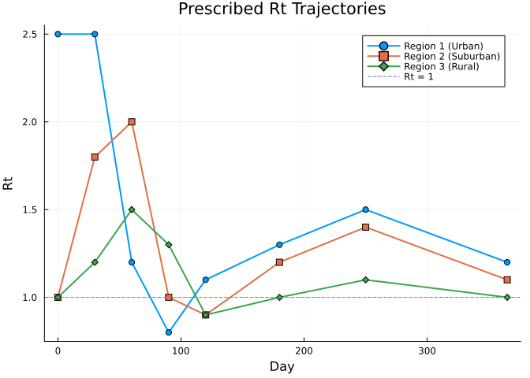
Inter-region coupling
Coupling between regions is captured by pairwise parameters. The coupling strengths are small, representing commuter or travel-based importation:
- Urban ↔ Suburban:
c12 = 0.1(strongest, commuter flows) - Urban ↔ Rural:
c13 = 0.05(weaker) - Suburban ↔ Rural:
c23 = 0.1
A global scaling parameter epsilon = 0.05 controls the overall importation pressure.
Model Definition
Since we have three regions with distinct Rt trajectories, we define a separate interpolation for each region’s Rt. With only three regions, we expand the SEIRD dynamics explicitly per region rather than using arrays.
The force of infection in region i combines local transmission with a small contribution from infectious individuals in connected regions:
\[\lambda_i = \beta_i \left( \frac{I_i}{N_i} + \varepsilon \sum_j C_{ij} \frac{I_j}{N_j} \right)\]
where $\beta_i = \text{Rt}_i \times \gamma$, $\varepsilon$ is the coupling strength, and $C_{ij}$ are the pairwise coupling coefficients.
seird_regions = @odin begin
# Per-region Rt via interpolation
n_Rt_times = parameter()
dim(Rt_t) = n_Rt_times
dim(Rt_v1) = n_Rt_times
dim(Rt_v2) = n_Rt_times
dim(Rt_v3) = n_Rt_times
Rt_t = parameter()
Rt_v1 = parameter()
Rt_v2 = parameter()
Rt_v3 = parameter()
Rt_1 = interpolate(Rt_t, Rt_v1, :linear)
Rt_2 = interpolate(Rt_t, Rt_v2, :linear)
Rt_3 = interpolate(Rt_t, Rt_v3, :linear)
# Epidemiological parameters
gamma = parameter(0.2)
sigma = parameter(0.333)
ifr = parameter(0.005)
rho = parameter(0.3)
epsilon = parameter(0.05)
# Population and initial conditions
N1 = parameter(5e6)
N2 = parameter(3e6)
N3 = parameter(1e6)
I0_1 = parameter(100.0)
I0_2 = parameter(10.0)
I0_3 = parameter(1.0)
# Coupling (symmetric pairwise)
c12 = parameter(0.1)
c13 = parameter(0.05)
c23 = parameter(0.1)
# Force of infection per region
foi_1 = Rt_1 * gamma * (I1 / N1 + epsilon * (c12 * I2 / N2 + c13 * I3 / N3))
foi_2 = Rt_2 * gamma * (I2 / N2 + epsilon * (c12 * I1 / N1 + c23 * I3 / N3))
foi_3 = Rt_3 * gamma * (I3 / N3 + epsilon * (c13 * I1 / N1 + c23 * I2 / N2))
# Region 1 (Urban)
deriv(S1) = -foi_1 * S1
deriv(E1) = foi_1 * S1 - sigma * E1
deriv(I1) = sigma * E1 - gamma * I1
deriv(R1) = (1 - ifr) * gamma * I1
deriv(D1) = ifr * gamma * I1
deriv(cum1) = foi_1 * S1
# Region 2 (Suburban)
deriv(S2) = -foi_2 * S2
deriv(E2) = foi_2 * S2 - sigma * E2
deriv(I2) = sigma * E2 - gamma * I2
deriv(R2) = (1 - ifr) * gamma * I2
deriv(D2) = ifr * gamma * I2
deriv(cum2) = foi_2 * S2
# Region 3 (Rural)
deriv(S3) = -foi_3 * S3
deriv(E3) = foi_3 * S3 - sigma * E3
deriv(I3) = sigma * E3 - gamma * I3
deriv(R3) = (1 - ifr) * gamma * I3
deriv(D3) = ifr * gamma * I3
deriv(cum3) = foi_3 * S3
# Initial conditions
initial(S1) = N1 - I0_1
initial(E1) = 0
initial(I1) = I0_1
initial(R1) = 0
initial(D1) = 0
initial(cum1) = 0
initial(S2) = N2 - I0_2
initial(E2) = 0
initial(I2) = I0_2
initial(R2) = 0
initial(D2) = 0
initial(cum2) = 0
initial(S3) = N3 - I0_3
initial(E3) = 0
initial(I3) = I0_3
initial(R3) = 0
initial(D3) = 0
initial(cum3) = 0
# Outputs
output(daily_cases_1) = rho * sigma * E1
output(daily_cases_2) = rho * sigma * E2
output(daily_cases_3) = rho * sigma * E3
output(sero_1) = cum1 / N1
output(sero_2) = cum2 / N2
output(sero_3) = cum3 / N3
# Data comparison
cases1 = data()
cases2 = data()
cases3 = data()
cases1 ~ Poisson(rho * sigma * E1 * 7 + 1e-6)
cases2 ~ Poisson(rho * sigma * E2 * 7 + 1e-6)
cases3 ~ Poisson(rho * sigma * E3 * 7 + 1e-6)
endOdin.DustSystemGenerator{var"##OdinModel#278"}(var"##OdinModel#278"(18, [:S1, :E1, :I1, :R1, :D1, :cum1, :S2, :E2, :I2, :R2, :D2, :cum2, :S3, :E3, :I3, :R3, :D3, :cum3], [:n_Rt_times, :Rt_t, :Rt_v1, :Rt_v2, :Rt_v3, :gamma, :sigma, :ifr, :rho, :epsilon, :N1, :N2, :N3, :I0_1, :I0_2, :I0_3, :c12, :c13, :c23], true, false, true, true, true, Dict{Symbol, Array}()))Key features of this model:
- Explicit per-region states:
S1,E1,I1, etc. are written out for each of the three regions, avoiding DSL array edge cases while keeping the dynamics identical - Separate Rt interpolation: Each region has its own piecewise-linear Rt trajectory, reflecting different intervention timings
- Pairwise coupling: The
c12,c13,c23parameters andepsiloncontrol importation pressure between regions - Two outputs per region:
daily_cases_*(reported case rate) andsero_*(cumulative attack rate) for monitoring
Simulation
Parameter setup
true_pars = (
n_Rt_times = Float64(n_Rt),
Rt_t = Rt_times,
Rt_v1 = Rt_region1,
Rt_v2 = Rt_region2,
Rt_v3 = Rt_region3,
epsilon = 0.05,
N1 = 5.0e6,
N2 = 3.0e6,
N3 = 1.0e6,
I0_1 = 100.0,
I0_2 = 10.0,
I0_3 = 1.0,
c12 = 0.1,
c13 = 0.05,
c23 = 0.1,
gamma = 0.2,
sigma = 1.0 / 3.0,
ifr = 0.005,
rho = 0.3,
)
println("Infectious period: ", 1 / true_pars.gamma, " days")
println("Latent period: ", round(1 / true_pars.sigma, digits=1), " days")
println("IFR: ", 100 * true_pars.ifr, "%")
println("Reporting rate: ", 100 * true_pars.rho, "%")Infectious period: 5.0 days
Latent period: 3.0 days
IFR: 0.5%
Reporting rate: 30.0%Run simulation
sim_times = collect(0.0:1.0:365.0)
result = simulate(seird_regions, true_pars; times=sim_times, seed=1)
println("Output shape: ", size(result))Output shape: (24, 1, 366)The state vector is ordered as: S1, E1, I1, R1, D1, cum1, S2, E2, I2, R2, D2, cum2, S3, E3, I3, R3, D3, cum3 (18 states), followed by the outputs daily_cases_1, daily_cases_2, daily_cases_3, sero_1, sero_2, sero_3 (6 outputs).
Epidemic dynamics
region_names = ["Urban (5M)", "Suburban (3M)", "Rural (1M)"]
region_colors = [:steelblue :orange :green]
# State indices for I (infectious): I1=3, I2=9, I3=15
I_idx = [3, 9, 15]
# Infectious individuals by region
p_I = plot(xlabel="Day", ylabel="Infectious (I)",
title="Infectious Individuals by Region",
legend=:topright, size=(700, 350))
for i in 1:n_regions
plot!(p_I, sim_times, result[I_idx[i], 1, :],
label=region_names[i], lw=2, color=region_colors[i])
end
p_I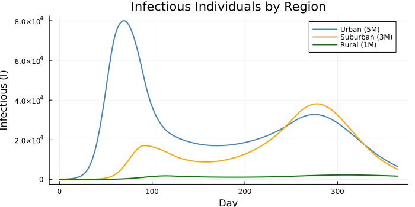
# State indices for D (deaths): D1=5, D2=11, D3=17
D_idx = [5, 11, 17]
# Cumulative deaths by region
p_D = plot(xlabel="Day", ylabel="Cumulative Deaths",
title="Cumulative Deaths by Region",
legend=:topleft, size=(700, 350))
for i in 1:n_regions
plot!(p_D, sim_times, result[D_idx[i], 1, :],
label=region_names[i], lw=2, color=region_colors[i])
end
p_D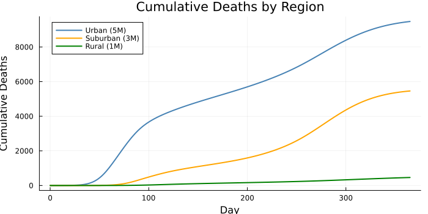
# Output indices: daily_cases_1=19, daily_cases_2=20, daily_cases_3=21
cases_idx = [19, 20, 21]
# Daily reported cases (output)
p_cases = plot(xlabel="Day", ylabel="Daily Reported Cases",
title="Expected Daily Cases by Region",
legend=:topright, size=(700, 350))
for i in 1:n_regions
plot!(p_cases, sim_times, result[cases_idx[i], 1, :],
label=region_names[i], lw=2, color=region_colors[i])
end
p_cases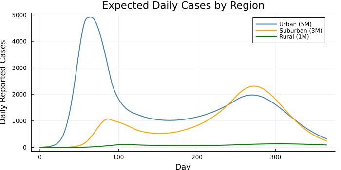
# Output indices: sero_1=22, sero_2=23, sero_3=24
sero_idx = [22, 23, 24]
# Seroprevalence over time
p_sero = plot(xlabel="Day", ylabel="Seroprevalence",
title="Cumulative Seroprevalence by Region",
legend=:topleft, size=(700, 350))
for i in 1:n_regions
plot!(p_sero, sim_times, result[sero_idx[i], 1, :],
label=region_names[i], lw=2, color=region_colors[i])
end
p_sero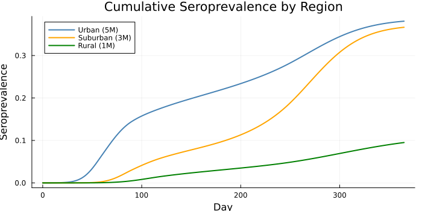
The urban region (blue) experiences the earliest and largest wave due to its high initial Rt of 2.5. The suburban region (orange) follows with a delayed peak. The rural region (green) has a much smaller epidemic, partly because its Rt stays closer to 1, but inter-region coupling ensures it still experiences some transmission even when local Rt is below 1.
Synthetic Data
We generate weekly reported case counts for each region, matching the Poisson comparison in the model.
Random.seed!(42)
# Weekly observation times
obs_weeks = collect(7.0:7.0:364.0)
n_weeks = length(obs_weeks)
# Simulate to get state at weekly intervals
result_weekly = simulate(seird_regions, true_pars; times=obs_weeks, seed=1)
# State indices for E (exposed): E1=2, E2=8, E3=14
E_idx = [2, 8, 14]
# Generate Poisson-distributed weekly case counts
obs_cases = zeros(Int, n_weeks, n_regions)
for w in 1:n_weeks
for i in 1:n_regions
E_i = result_weekly[E_idx[i], 1, w]
expected = true_pars.rho * true_pars.sigma * E_i * 7
obs_cases[w, i] = rand(Poisson(max(expected, 1e-10)))
end
end
println("Total observed cases: ", sum(obs_cases))
println("Cases per region: ", [sum(obs_cases[:, i]) for i in 1:n_regions])Total observed cases: 929599
Cases per region: [571669, 329671, 28259]p_data = plot(xlabel="Day", ylabel="Weekly Reported Cases",
title="Synthetic Weekly Case Data",
legend=:topright, size=(700, 400))
for i in 1:n_regions
scatter!(p_data, obs_weeks, obs_cases[:, i],
ms=3, alpha=0.7, color=region_colors[i],
label=region_names[i])
plot!(p_data, obs_weeks, obs_cases[:, i],
alpha=0.3, color=region_colors[i], label=nothing)
end
p_data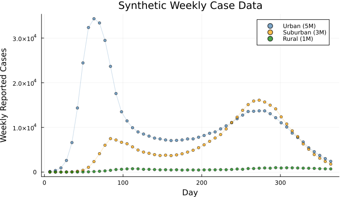
Prepare data for the unfilter
data = ObservedData([
(time = obs_weeks[w],
cases1 = Float64(obs_cases[w, 1]),
cases2 = Float64(obs_cases[w, 2]),
cases3 = Float64(obs_cases[w, 3]))
for w in 1:n_weeks
])Odin.FilterData{@NamedTuple{cases1::Float64, cases2::Float64, cases3::Float64}}([7.0, 14.0, 21.0, 28.0, 35.0, 42.0, 49.0, 56.0, 63.0, 70.0 … 301.0, 308.0, 315.0, 322.0, 329.0, 336.0, 343.0, 350.0, 357.0, 364.0], [(cases1 = 126.0, cases2 = 3.0, cases3 = 1.0), (cases1 = 343.0, cases2 = 3.0, cases3 = 2.0), (cases1 = 931.0, cases2 = 8.0, cases3 = 1.0), (cases1 = 2600.0, cases2 = 23.0, cases3 = 1.0), (cases1 = 6599.0, cases2 = 57.0, cases3 = 9.0), (cases1 = 14345.0, cases2 = 184.0, cases3 = 11.0), (cases1 = 24437.0, cases2 = 404.0, cases3 = 24.0), (cases1 = 32356.0, cases2 = 1068.0, cases3 = 58.0), (cases1 = 34323.0, cases2 = 2350.0, cases3 = 114.0), (cases1 = 33383.0, cases2 = 4120.0, cases3 = 182.0) … (cases1 = 11029.0, cases2 = 12352.0, cases3 = 912.0), (cases1 = 10088.0, cases2 = 10772.0, cases3 = 962.0), (cases1 = 8730.0, cases2 = 9241.0, cases3 = 949.0), (cases1 = 7727.0, cases2 = 7933.0, cases3 = 909.0), (cases1 = 6735.0, cases2 = 6297.0, cases3 = 878.0), (cases1 = 5434.0, cases2 = 5110.0, cases3 = 857.0), (cases1 = 4565.0, cases2 = 3924.0, cases3 = 821.0), (cases1 = 3732.0, cases2 = 3106.0, cases3 = 755.0), (cases1 = 3016.0, cases2 = 2371.0, cases3 = 723.0), (cases1 = 2406.0, cases2 = 1779.0, cases3 = 706.0)])Inference
Parameters to fit
We fit the Rt trajectory values for each region plus the shared reporting rate and IFR, while fixing the epidemiological time scales and coupling structure.
| Parameter | Fitted? | Notes |
|---|---|---|
Rt_v1[1:8] | ✓ | Region 1 Rt at 8 time points |
Rt_v2[1:8] | ✓ | Region 2 Rt at 8 time points |
Rt_v3[1:8] | ✓ | Region 3 Rt at 8 time points |
rho | ✓ | Shared reporting rate |
ifr | ✓ | Shared infection fatality rate |
gamma, sigma | ✗ | Fixed at known values |
epsilon, c12, c13, c23 | ✗ | Fixed — coupling structure assumed known |
N1, N2, N3, I0_* | ✗ | Fixed population sizes and seeds |
This gives 26 parameters total: 8 × 3 = 24 Rt values + rho + ifr.
Packer and fixed parameters
We use scalar parameter names with a process function that reassembles the Rt knot values into the vectors the model expects:
Rt_names = Symbol[]
for region in 1:3
for k in 1:n_Rt
push!(Rt_names, Symbol("Rt_v$(region)_$(k)"))
end
end
all_scalars = vcat([:rho, :ifr], Rt_names)
packer = Packer(
all_scalars;
fixed = (
n_Rt_times = Float64(n_Rt),
Rt_t = Rt_times,
epsilon = 0.05,
N1 = 5.0e6,
N2 = 3.0e6,
N3 = 1.0e6,
I0_1 = 100.0,
I0_2 = 10.0,
I0_3 = 1.0,
c12 = 0.1,
c13 = 0.05,
c23 = 0.1,
gamma = 0.2,
sigma = 1.0 / 3.0,
),
process = function(nt)
Rt_v1 = Float64[getfield(nt, Symbol("Rt_v1_$k")) for k in 1:Int(nt.n_Rt_times)]
Rt_v2 = Float64[getfield(nt, Symbol("Rt_v2_$k")) for k in 1:Int(nt.n_Rt_times)]
Rt_v3 = Float64[getfield(nt, Symbol("Rt_v3_$k")) for k in 1:Int(nt.n_Rt_times)]
merge(nt, (Rt_v1=Rt_v1, Rt_v2=Rt_v2, Rt_v3=Rt_v3))
end,
)
println("Number of fitted parameters: ", packer.len)Number of fitted parameters: 26Prior distributions
We place weakly informative priors on each parameter:
prior = @prior begin
rho ~ Beta(3.0, 7.0) # mean 0.3
ifr ~ Beta(2.0, 398.0) # mean ~0.005
Rt_v1_1 ~ Normal(1.5, 0.7)
Rt_v1_2 ~ Normal(1.5, 0.7)
Rt_v1_3 ~ Normal(1.5, 0.7)
Rt_v1_4 ~ Normal(1.5, 0.7)
Rt_v1_5 ~ Normal(1.5, 0.7)
Rt_v1_6 ~ Normal(1.5, 0.7)
Rt_v1_7 ~ Normal(1.5, 0.7)
Rt_v1_8 ~ Normal(1.5, 0.7)
Rt_v2_1 ~ Normal(1.5, 0.7)
Rt_v2_2 ~ Normal(1.5, 0.7)
Rt_v2_3 ~ Normal(1.5, 0.7)
Rt_v2_4 ~ Normal(1.5, 0.7)
Rt_v2_5 ~ Normal(1.5, 0.7)
Rt_v2_6 ~ Normal(1.5, 0.7)
Rt_v2_7 ~ Normal(1.5, 0.7)
Rt_v2_8 ~ Normal(1.5, 0.7)
Rt_v3_1 ~ Normal(1.5, 0.7)
Rt_v3_2 ~ Normal(1.5, 0.7)
Rt_v3_3 ~ Normal(1.5, 0.7)
Rt_v3_4 ~ Normal(1.5, 0.7)
Rt_v3_5 ~ Normal(1.5, 0.7)
Rt_v3_6 ~ Normal(1.5, 0.7)
Rt_v3_7 ~ Normal(1.5, 0.7)
Rt_v3_8 ~ Normal(1.5, 0.7)
endMontyModel{var"#13#14", var"#15#16"{var"#13#14"}, var"#17#18", Matrix{Float64}}(["rho", "ifr", "Rt_v1_1", "Rt_v1_2", "Rt_v1_3", "Rt_v1_4", "Rt_v1_5", "Rt_v1_6", "Rt_v1_7", "Rt_v1_8" … "Rt_v2_7", "Rt_v2_8", "Rt_v3_1", "Rt_v3_2", "Rt_v3_3", "Rt_v3_4", "Rt_v3_5", "Rt_v3_6", "Rt_v3_7", "Rt_v3_8"], var"#13#14"(), var"#15#16"{var"#13#14"}(var"#13#14"()), var"#17#18"(), [0.0 1.0; 0.0 1.0; … ; -Inf Inf; -Inf Inf], Odin.MontyModelProperties(true, true, false, false))Likelihood via unfilter
The unfilter evaluates the ODE at each data time point and computes the Poisson log-likelihood of the weekly case counts:
uf = Likelihood(seird_regions, data; time_start=0.0)
ll = as_model(uf, packer)
posterior = ll + prior
# Check log-likelihood at true values
true_theta = vcat(
[true_pars.rho, true_pars.ifr],
Rt_region1, Rt_region2, Rt_region3
)
ll_true = ll(true_theta)
println("Log-likelihood at true parameters: ", round(ll_true, digits=2))Log-likelihood at true parameters: -807.5Run MCMC
We use an adaptive random walk sampler with a diagonal initial proposal. The adaptation phase adjusts the proposal covariance to achieve efficient mixing across all 26 parameters.
n_pars = packer.len
vcv_init = diagm(vcat(
[0.01, 0.000001], # rho, ifr
fill(0.01, n_Rt), # Rt_v1
fill(0.01, n_Rt), # Rt_v2
fill(0.01, n_Rt), # Rt_v3
))
sampler = adaptive_mh(vcv_init)
initial = reshape(true_theta, n_pars, 1)
samples = sample(posterior, sampler, 3000;
initial=initial, n_chains=1, n_burnin=500, seed=42)Odin.MontySamples([0.3003276262481722 0.3003276262481722 … 0.2987568705007241 0.2987568705007241; 0.005016538692474207 0.005016538692474207 … 0.005147366684948783 0.005147366684948783; … ; 1.0968638561689361 1.0968638561689361 … 1.0976224226637812 1.0976224226637812; 1.0049873890432082 1.0049873890432082 … 1.009778738352336 1.009778738352336;;;], [-821.5120222532977; -821.5120222532977; … ; -831.1853070560694; -831.1853070560694;;], [0.3; 0.005; … ; 1.1; 1.0;;], ["rho", "ifr", "Rt_v1_1", "Rt_v1_2", "Rt_v1_3", "Rt_v1_4", "Rt_v1_5", "Rt_v1_6", "Rt_v1_7", "Rt_v1_8" … "Rt_v2_7", "Rt_v2_8", "Rt_v3_1", "Rt_v3_2", "Rt_v3_3", "Rt_v3_4", "Rt_v3_5", "Rt_v3_6", "Rt_v3_7", "Rt_v3_8"], Dict{Symbol, Any}(:acceptance_rate => [0.25966666666666666]))Posterior Analysis
Recovered Rt trajectories
The main output of interest is the posterior distribution of Rt over time for each region. We extract the Rt values at each time point and visualise the posterior uncertainty:
# Extract Rt posterior samples (after packer ordering: rho, ifr, Rt_v1[1:8], Rt_v2[1:8], Rt_v3[1:8])
rho_post = samples.pars[1, :, 1]
ifr_post = samples.pars[2, :, 1]
Rt1_post = samples.pars[3:10, :, 1] # 8 × n_samples
Rt2_post = samples.pars[11:18, :, 1]
Rt3_post = samples.pars[19:26, :, 1]8×2500 Matrix{Float64}:
0.997501 0.997501 0.997613 0.997613 … 1.00794 1.008 1.008
1.19637 1.19637 1.19607 1.19607 1.20031 1.19993 1.19993
1.49974 1.49974 1.50004 1.50004 1.50875 1.5084 1.5084
1.2962 1.2962 1.29568 1.29568 1.29657 1.2969 1.2969
0.894238 0.894238 0.894514 0.894514 0.892725 0.892682 0.892682
1.00237 1.00237 1.00235 1.00235 … 1.00401 1.0038 1.0038
1.09686 1.09686 1.09712 1.09712 1.09742 1.09762 1.09762
1.00499 1.00499 1.00545 1.00545 1.00991 1.00978 1.00978function rt_ribbon!(p, times, Rt_post, true_vals; color, label)
med = [median(Rt_post[k, :]) for k in 1:size(Rt_post, 1)]
lo = [quantile(Rt_post[k, :], 0.025) for k in 1:size(Rt_post, 1)]
hi = [quantile(Rt_post[k, :], 0.975) for k in 1:size(Rt_post, 1)]
plot!(p, times, med, ribbon=(med .- lo, hi .- med),
fillalpha=0.2, lw=2, color=color, label=label)
scatter!(p, times, true_vals, ms=5, color=color,
markerstrokecolor=:white, label=nothing)
end
p_rt_post = plot(xlabel="Day", ylabel="Rt",
title="Posterior Rt Trajectories (median + 95% CrI)",
legend=:topright, size=(800, 400))
rt_ribbon!(p_rt_post, Rt_times, Rt1_post, Rt_region1,
color=:steelblue, label="Region 1 (Urban)")
rt_ribbon!(p_rt_post, Rt_times, Rt2_post, Rt_region2,
color=:orange, label="Region 2 (Suburban)")
rt_ribbon!(p_rt_post, Rt_times, Rt3_post, Rt_region3,
color=:green, label="Region 3 (Rural)")
hline!(p_rt_post, [1.0], ls=:dash, color=:gray, label="Rt = 1")
p_rt_post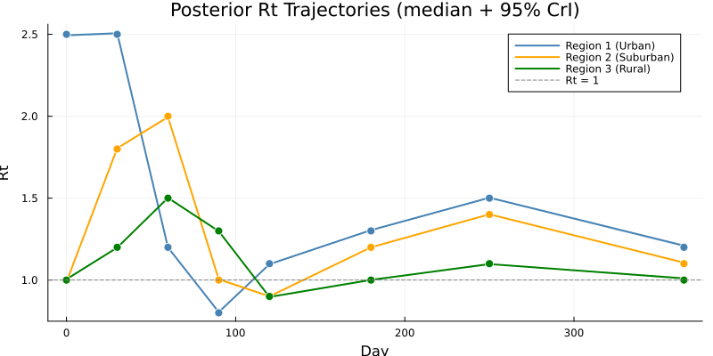
The dots show the true Rt values used to generate the data. The credible intervals should encompass the truth at most time points, demonstrating that the MCMC has successfully recovered the heterogeneous regional dynamics.
Shared parameter posteriors
function summarise(name, vals, truth)
m = round(mean(vals), sigdigits=3)
lo = round(quantile(vals, 0.025), sigdigits=3)
hi = round(quantile(vals, 0.975), sigdigits=3)
println(" $name: $m [$lo, $hi] (true=$truth)")
end
println("Shared parameters:")
summarise("ρ (reporting)", rho_post, 0.3)
summarise("IFR", ifr_post, 0.005)Shared parameters:
ρ (reporting): 0.298 [0.297, 0.3] (true=0.3)
IFR: 0.00512 [0.00502, 0.00522] (true=0.005)p1 = histogram(rho_post, bins=40, normalize=true, alpha=0.6,
xlabel="ρ", ylabel="Density",
title="Posterior: Reporting Rate", label="")
vline!(p1, [0.3], color=:red, lw=2, label="True")
p2 = histogram(ifr_post, bins=40, normalize=true, alpha=0.6,
xlabel="IFR", ylabel="Density",
title="Posterior: Infection Fatality Rate", label="")
vline!(p2, [0.005], color=:red, lw=2, label="True")
plot(p1, p2, layout=(1, 2), size=(800, 300))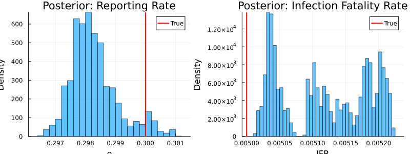
Posterior predictive check
We draw parameter sets from the posterior and simulate forward to compare the model predictions against observed data:
n_proj = 100
proj_times = collect(0.0:1.0:365.0)
n_t = length(proj_times)
I_traj = zeros(n_proj, n_t, n_regions)
Random.seed!(10)
n_total = size(samples.pars, 2)
idx = rand(1:n_total, n_proj)
for j in 1:n_proj
pars_j = packer(samples.pars[:, idx[j], 1])
r = simulate(seird_regions, pars_j; times=proj_times, seed=j)
for i in 1:n_regions
I_traj[j, :, i] = r[I_idx[i], 1, :]
end
endp_ppc = plot(xlabel="Day", ylabel="Infectious (I)",
title="Posterior Predictive: Infectious by Region",
legend=:topright, size=(800, 400))
for i in 1:n_regions
med = [median(I_traj[:, k, i]) for k in 1:n_t]
lo = [quantile(I_traj[:, k, i], 0.025) for k in 1:n_t]
hi = [quantile(I_traj[:, k, i], 0.975) for k in 1:n_t]
plot!(p_ppc, proj_times, med, ribbon=(med .- lo, hi .- med),
fillalpha=0.15, lw=2, color=region_colors[i],
label=region_names[i])
end
# Overlay true trajectories
for i in 1:n_regions
plot!(p_ppc, sim_times, result[I_idx[i], 1, :],
ls=:dash, lw=1.5, color=region_colors[i], label=nothing)
end
p_ppc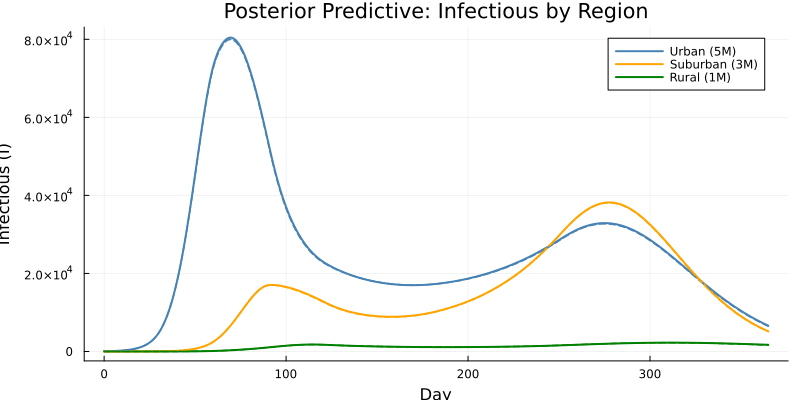
Trace plots
p_tr1 = plot(rho_post, ylabel="ρ", xlabel="Iteration",
title="Trace: Reporting Rate", label="", alpha=0.5)
hline!(p_tr1, [0.3], color=:red, lw=2, label="True")
p_tr2 = plot(Rt1_post[1, :], ylabel="Rt₁(t=0)", xlabel="Iteration",
title="Trace: Region 1 Rt at t=0", label="", alpha=0.5)
hline!(p_tr2, [2.5], color=:red, lw=2, label="True")
p_tr3 = plot(Rt2_post[3, :], ylabel="Rt₂(t=60)", xlabel="Iteration",
title="Trace: Region 2 Rt at t=60", label="", alpha=0.5)
hline!(p_tr3, [2.0], color=:red, lw=2, label="True")
plot(p_tr1, p_tr2, p_tr3, layout=(3, 1), size=(700, 600))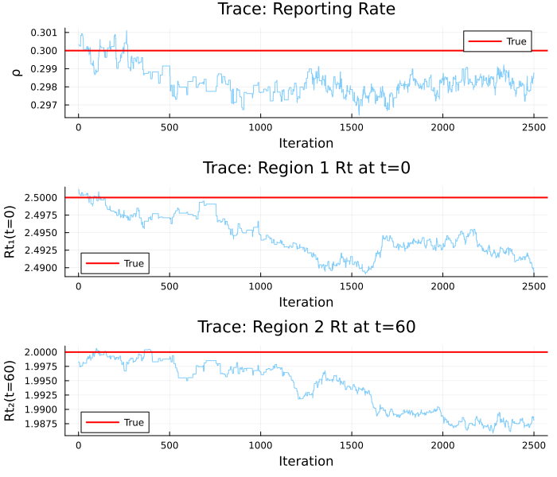
The Role of Coupling
To see the effect of inter-region coupling, we can compare the fit with and without the coupling term. When coupling is present, infections “leak” between regions, which means:
- The rural region sees cases even when its local Rt is below 1
- The timing of peaks is shifted by importation pressure
- Parameter estimates are subtly different because the coupling redistributes infection across regions
# Simulate without coupling (epsilon = 0)
pars_nocoupling = merge(true_pars, (epsilon=0.0,))
result_nc = simulate(seird_regions, pars_nocoupling;
times=sim_times, seed=1)
p_coupling = plot(xlabel="Day", ylabel="Infectious (I)",
title="Effect of Inter-Region Coupling",
legend=:topright, size=(800, 400))
for i in 1:n_regions
plot!(p_coupling, sim_times, result[I_idx[i], 1, :],
lw=2, color=region_colors[i], label="$(region_names[i]) — coupled")
plot!(p_coupling, sim_times, result_nc[I_idx[i], 1, :],
lw=1.5, ls=:dash, color=region_colors[i],
label="$(region_names[i]) — isolated")
end
p_coupling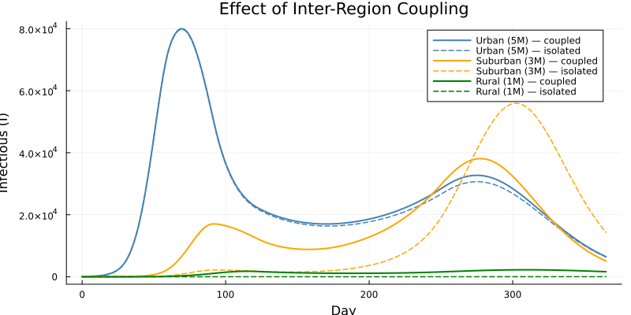
Summary
| Aspect | Detail |
|---|---|
| Model | Multi-region SEIRD with time-varying Rt and inter-region coupling |
| Regions | 3 (Urban, Suburban, Rural) with different populations and Rt |
| Time-varying Rt | Piecewise linear via interpolate(), one per region |
| Coupling | Pairwise parameters × coupling strength ε |
| Data | Weekly reported cases per region (Poisson) |
| Inference | Deterministic ODE unfilter + adaptive MCMC |
| Fitted parameters | 24 Rt values + ρ + IFR = 26 total |
Key takeaways
Expanded per-region states avoid DSL array edge cases. With a small fixed number of regions, writing
S1,E1,I1, etc. explicitly keeps the model straightforward and avoids complex array indexing features.Separate interpolation per region allows each area to have its own intervention timeline while sharing the same epidemiological parameters (γ, σ, IFR).
Inter-region coupling captures importation effects that pure region-specific models miss — especially important for regions with Rt \< 1 that still experience cases from neighbouring areas.
Joint fitting across regions enables information sharing: the reporting rate ρ is constrained by data from all three regions simultaneously, giving tighter posterior estimates than fitting each region independently.
The workflow scales naturally: the same pattern works for additional data streams (deaths, serology) and more complex coupling structures.
| Step | API |
|---|---|
| Define model | @odin begin … end with per-region states and interpolate() |
| Prepare data | ObservedData([(time=…, cases1=…, …), …]) |
| Pack parameters | Packer([:rho, :ifr]; array=Dict(:Rt_v1 => 8, …), fixed=…) |
| Likelihood | Likelihood() → as_model() |
| Prior | @prior begin … end |
| Posterior | likelihood + prior |
| Sample | sample(posterior, sampler, n; …) |